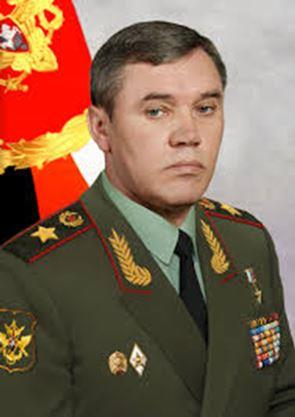
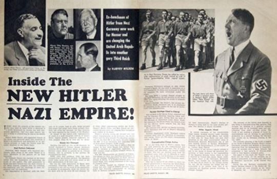
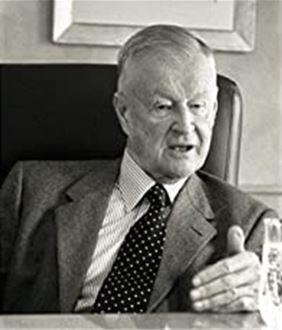
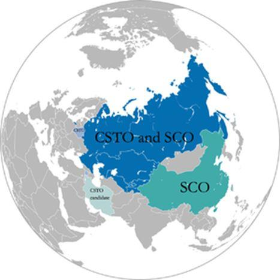
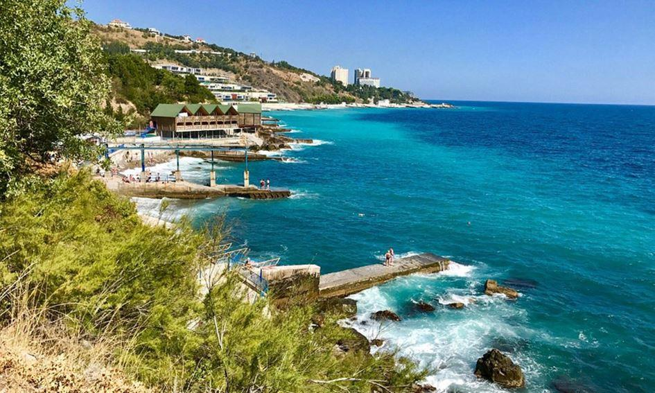
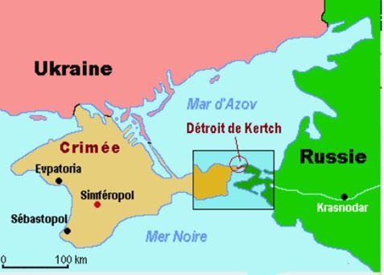
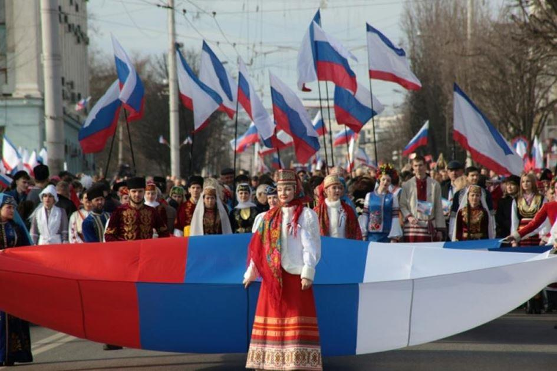
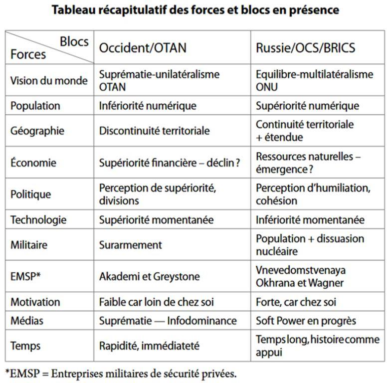
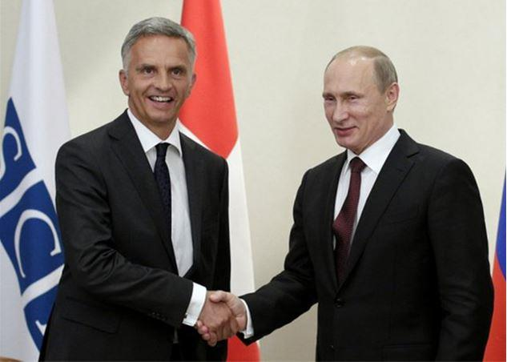

« War is peace. Freedom is slavery. Ignorance is strength. »
George Orwell, 1984
« Par-dessus tout, l’alliance potentiellement la plus dangereuse, selon le point de vue des USA, a toujours été une alliance entre la Russie et l’Allemagne. Cela serait une alliance entre la technologie et le capital allemands avec les ressources naturelles et humaines de la Russie. »
George Friedman
Les guerres en Ukraine sont « hybrides » bien au-delà de ce que l’expression recouvre habituellement : elles sont politiques, économiques, médiatiques, militaires, internes et externes, publiques et privées, locales et intercontinentales, humaines et technologiques, conceptuelles et opérationnelles, par procuration. Kiev, la Crimée, le Donbass sont les points chauds à défaut d’être les épicentres. Quelles conceptions du monde s’affrontent-elles ? Comment maîtriser l’Infowar et l’infodominance? L’unité géographique du continent eurasiatique sera-t-elle renforcée par des unions politiques ou contrariée par l’alliance euratlantique ? au cœur de l’Eurasie, l’Ukraine est un cas d’école pour le contrôle de l’ordre du monde et notre ami Gabriel Galice nous propose une analyse des différents enjeux.
La guerre hors limites...
Voilà vingt ans que les colonels chinois (devenus généraux) Qiao Liang et Wang Xingsui nous en ont avertis, systématisant les analyses états-uniennes en termes de soft, hard et smart power : les guerres du xxie siècle seront des « opérations de guerre non militaires » (OGNM)1. Les opérations militaires ne disparaissent pas, tant s’en faut2, mais elles sont enrichies, préparées, valorisées, par de multiples champs, procédés et procédures. La multiplicité des champs de conflictualité, de belligérance, leurs imbrications complexifient les notions d’alliés ou d’adversaires. Une guerre en cache une autre, l’allié recèle un adversaire redoutable, l’ennemi déclaré est (aussi) un allié occulte. Les trois conflits d’Ukraine, d’Iran et de Syrie (sans parler du Yémen) illustrent l’inédite cartographie des guerres contemporaines, redessinées par les nouvelles technologies. Un paradoxe apparent ajoute à la complexité : le présentisme n’abolit pas le poids de l’histoire. L’amnésie des personnes se double d’une mémoire longue des peuples, sans laquelle le présent paraît insensé. Si États-uniens et Chinois affichent leurs desseins et méthodes, les stratèges russes ne sont pas en reste. Valery Gerasimov, chef d’état-major, livre ses réflexions dans l’article intitulé « La valeur de la science est dans la prospective », sous-titré « Les nouveaux défis exigent de repenser les formes et les méthodes de conduite des opérations de combat. » La version en anglais est publiée dans Military Review de janvier – février 2016.
V. Gerasimov écrit3 :« Au vingt et unième siècle, nous avons observé une tendance au brouillage des frontières entre les états de guerre et de paix. [...] Parmi ces actions (asymétriques) figurent l’utilisation de forces d’opérations spéciales et l’opposition interne pour créer un front opérationnel permanent à travers tout le territoire de l’État ennemi, ainsi que des actions informationnelles et des moyens qui sont constamment perfectionnés. »
En d’autres termes, l’assertion d’Orwell se vérifie : guerre et paix se mélangent au point de se confondre. Guerre économique, guerre de l’information, opérations militaires et paramilitaires constituent des continuums unifiés par les technologies.
« Lorsque la compréhension d’un problème se situe manifestement à l’articulation de deux disciplines, comme la gestion de l’économie et celle de la violence, on est bien obligé de la référer à un concept créé pour former passage entre elles, comme celui de “néolibéralisme de guerre”. »4
Sans doute le terme de néocapitalisme5 de guerre serait-il davantage plus rigoureux, rendrait compte de la connivence entre la violence des marchés et les marchés de violence6.
S’ils sont entremêlés, les vecteurs belligènes ont des particularités, qu’il convient de repérer, puis de contextualiser.
Visions du monde
Républicaine ou démocrate, l’administration états-unienne reste persuadée de la vocation nationale au leadership de l’humanité. Des intellectuels marginaux, d’anciens diplomates de renom comme George Kennan7 ou même Henri Kissinger8, des universitaires comme Charles Kupchan9 et John Mearsheimer10 soulignent les responsabilités occidentales dans l’extension de l’OTAN ou la crise ukrainienne et font entendre des voix favorables au rapprochement avec la Russie, mais ils ne pèsent pas lourd face aux néoconservateurs et au lobby militaro-industriel, fusionné avec le lobby financiéro-médiatique.
La vision du monde préférentielle de la Russie était celle d’un trait d’union entre l’Europe et l’Asie, géographie oblige, sans même solliciter la théorie russe de l’eurasisme, de nos jours reprise par Alexandre Douguine.
Les offres de Mikhael Gorbatchev, puis de Dimitri Medvedev, enfin de Vladimir Poutine d’un partenariat fort avec l’Europe et d’une relation sereine avec les États-Unis d’Amérique n’ont pas rencontré l’écho espéré. À défaut, la Fédération de Russie a donc resserré ses liens avec son environnement proche (Organisation du Traité de sécurité collective ou OTSC en 2002) et avec la République populaire de Chine (Organisation de coopération de Shanghai en 2001).
La guerre économique et l’économie de guerre
La « guerre économique » n’est pas une métaphore, elle participe de la guerre globale, elle est coextensive à l’impérialisme nouvelle mouture11. Elle provoque la mort, biologique12 ou sociale. Éditorialiste influent au New York Times, Thomas Friedman systématise hardiment le couplage entre l’économique et le militaire : « L’intégration économique de la planète requiert la disposition de la puissance américaine à utiliser sa force contre ceux qui, de l’Irak à la Corée du Nord, menaceraient le système de mondialisation. La main invisible du marché ne peut pas fonctionner sans un poing caché – McDonald’s ne peut pas fonctionner sans McDonnell Douglas, qui construit les F-15. Et le poing caché qui rend le monde sûr pour les technologies de la Silicon Valley s’appelle l’armée, la force aérienne, la force navale et les marines des États-Unis. »13
La guerre économique, irréductible à « la main invisible du marché », accompagne l’emploi de la force armée. Guerre industrielle (espionnage aidant), guerre financière (gel d’avoirs bancaires vénézuéliens, russes, iraniens), guerre monétaire (à commencer par le privilège exorbitant du dollar états-unien), embargos états-uniens décidés sans l’aval du Conseil de sécurité (Russie, Iran...), puis imposés aux « alliés » (et concurrents) sont autant de facettes de la guerre économique. L’ancienne économie de guerre se voulait la plus autarcique possible, la nouvelle est délibérément extravertie.
La guerre de l’information
Loin d’être nouvelle, la guerre de l’information/désinformation (Infowar) prend des formes inédites et des dimensions considérables. Le modelage méthodique de l’opinion par les grandes entreprises et les dirigeants politiques remonte à Edward Berneys (neveu de Sigmund Freud) et à la propagande en faveur de l’entrée en guerre des États-Unis, en 191714. Pour les dirigeants, la question est de savoir comment s’abstraire de la volonté populaire en démocratie ? Réponse : en la façonnant. Les spin doctors étaient nés, ils font fureur. Régis Debray s’est attaché à repérer les incidences des évolutions des systèmes de communication sur l’organisation politique15. François-Bernard Huyghe s’est spécialisé dans ce domaine : « La guerre ne consiste pas seulement à faire rentrer des morceaux de fer dans des morceaux de chair, mais aussi des idées dans des esprits ; elle suppose autant de moyens de propagation que de destruction. »16 Le plus déterminant – et le plus difficile – est de saisir les tenants et aboutissants des interrelations entre les aspects du système de domination. Le départ d’une grille de lecture plausible nous semble résider dans la notion de « système national/mondial hiérarchisé » (SNMH), mise en avant par Michel Beaud17. Penser ensemble le politique, l’économique, le militaire, l’idéologique revient à redéfinir rigoureusement les notions de nation, d’empire, d’impérialisme. Sami Naïr fournit une piste intéressante :« L’empire est un système-monde, l’impérialisme est un comportement politique, économique, militaire, qui peut caractériser une grande comme une petite nation. [...] L’empire est le système marchand désormais mondialement dominant, l’impérialisme loge en son cœur, à travers l’hégémonie structurelle des États-Unis. »18 La « synecdoque19 tueuse », ravageuse, est une pratique courante de la guerre de l’information. Nombre d’intellectuels ou supposés tels y cèdent à leur insu, quand ils n’y participent pas.
Il s’agit de réduire un peuple, un État, à son chef, puis de vilipender ledit chef avant d’entreprendre la destruction matérielle du pays. Gamal Abdel Nasser, Slobodan Milosevic, Saddam Hussein, Vladimir Poutine, Mouammar Kadhafi, Bachar El Assad, bien d’autres encore, illustrent le procédé, doublé parfois de l’identification intempestive : Nasser = Hitler, Poutine = Hitler (Hillary Clinton dixit).
La Russie partage les conceptions techniques, sinon la vision du monde occidental. La « communication stratégique » est définie par Evgeny Pashentsev comme « la projection par l’État de valeurs, intérêts et objectifs, vitaux et de longue portée, dans la conscience des publics nationaux et étrangers. Elle est réalisée au moyen d’une synchronisation adéquate d’activités multiformes dans tous les domaines de la vie sociale, avec le support d’une communication professionnelle. »20
... appliquée à l’Ukraine
La crise ukrainienne est à la fois un témoignage éloquent des guerres actuelles et un indicateur des blocs en reconstitution. Réputé (naguère, au moins) pour son sérieux, le Stockholm International Peace Research Institute (SIPRI) semble subir un alignement partisan croissant sur les positions otaniennes.
« Depuis son accession à l’indépendance après l’éclatement de l’Union soviétique en 1991, [...] la Russie, qui considère ses intérêts comme menacés par une Ukraine tournée vers l’Occident, a annexé la Crimée en mars 2014, après la chute du président ukrainien Viktor Ianoukovitch. [...] Elle a également contribué à provoquer une rébellion dans les oblasts de Lougansk et de Donetsk, dans la région industrialisée du Donbass, à l’est de l’Ukraine. Après presque sept ans de guerre et plus de 15 000 morts, l’intervention militaire russe domine la plupart des aspects de la vie politique en Ukraine. »21
Arguer que la Russie aurait brutalement « annexé » la Crimée, méfait conduisant aux « sanctions occidentales », c’est ignorer autant l’histoire longue22 que l’enchaînement des événements consécutifs à la chute du mur de Berlin.
Les grandes puissances ont des conceptions du monde, explicites, semi-explicites, implicites. Les États-Unis d’Amérique sont, qu’on s’en réjouisse, que l’on s’en moque ou qu’on le déplore, la principale puissance mondiale. Qu’ils soient les plus puissants n’implique pas qu’ils soient « méchants », contrairement à ce que me faisait dire tout à tour Bernard-Henri Lévy et une journaliste de la RTS. De la puissance, on use et on abuse, simplement. C’est donc des conceptions du monde respectives (de soi, des autres) qu’il faut partir avant de se perdre dans les considérations psychologiques, tactiques, militaires des protagonistes.
Il se trouve que les États-Unis, nonobstant leur fâcheuse propension à l’hégémonie baptisée « leadership », présentent l’appréciable avantage de mettre au grand jour les visées stratégiques conçues par leurs théoriciens et stratèges.
Zbigniew Brzezinski (1928-2017) aura été, plus d’un demi-siècle, un inspirateur majeur de la politique états-unienne. Son maître livre, Le Grand échiquier – L’Amérique et le reste du monde 23, reste une clé de compréhension de la politique extérieure des États-Unis.
Euramérique et Eurasie
Dès 1997, Zbigniew Brzezinski explique dans son maître-livre (actualisé par « Le vrai choix » en 2004) pourquoi et comment contrôler l’Eurasie.« L’Eurasie reste l’échiquier sur lequel se déroule la lutte pour la primauté mondiale. » [...] « Le but de ce livre est de formuler une politique géostratégique cohérente pour l’Amérique sur le continent eurasien. »
Hypothèses et raisonnements sont d’une grande rigueur intellectuelle. L’Eurasie est centrale, l’Amérique doit y être présente pour dominer la planète, l’Europe est la tête de pont de la démocratie en Eurasie, l’OTA N et l’Union européenne doivent de conserve étendre leur influence en Eurasie, les États-Unis doivent jouer simultanément l’Allemagne et la France (carte des zones d’influences respectives de ces deux pays à l’appui), alliées fidèles, mais, de façon différente, remuantes et capricieuses. Cela sera laborieux :« Quoi que l’avenir nous réserve, on peut raisonnablement conclure que la primauté américaine sur le continent eurasien sera soumise à de fortes turbulences et même confrontée à des épisodes de violence. » (p. 85)
L’auteur repère cinq « acteurs géostratégiques » : la France, l’Allemagne, la Russie, la Chine et l’Inde et cinq « pivots géopolitiques » : l’Ukraine, l’Azerbaïdjan, la Corée, la Turquie et l’Iran.« Exclure la Russie (de l’UE ou de l’OTA N) pourrait être lourd de conséquences – cela validerait les plus sombres prédictions russes –, mais la dilution de l’Union européenne ou de l’OTAN aurait des effets fortement déstabilisateurs. » « Le dilemme se résume à un choix entre équilibre tactique et dessein stratégique. » Le « pivot géopolitique » ukrainien fait l’objet de longs développements :« Dès 1994, Washington accorde la priorité aux relations américano-ukrainiennes (p. 140) [...] Au cours de la période 2005-2010, l’Ukraine pourrait à son tour être en situation d’entamer des négociations en vue de rejoindre l’UE et l’OTA N. »
Brzezinski suggère d’étendre à l’Ukraine le « triangle de Weimar » constitué en 1991 par la France, l’Allemagne et la Pologne pour en faire « la colonne vertébrale de la sécurité européenne ».
« Une question essentielle se pose : ce scénario se déroulera-t-il dans un environnement apaisé ou dans un contexte de tension avec la Russie. »
Nous avons la réponse. Mais le défi lancé aux Russes s’encombre peu de subtilités : « Pour que le choix de l’Europe – et en conséquence de l’Amérique – se révèle fructueux, la Russie doit satisfaire à deux exigences : tout d’abord rompre sans ambiguïté avec son passé impérial ; ensuite, cesser ses tergiversations à propos de l’élargissement des liens politiques et militaires entre l’Europe et l’Amérique. »
Brzezinski distingue l’Europe géographique vassalisée (« Surtout l’Europe est la tête de pont géostratégique fondamentale de l’Amérique [...] Pour le dire sans détour, l’Europe de l’Ouest reste dans une large mesure un protectorat américain et ses États rappellent ce qu’étaient jadis les vassaux et les tributaires des anciens empires. », p.88) de l’Europe géopolitique : (« Par Europe, nous entendons l’ensemble géopolitique uni par le lien transatlantique et engagé dans l’élargissement de l’Union européenne et de l’OTAN, tel qu’il prend tournure. »24)
Bref, le scénario de Brzezinski s’est déroulé comme prévu, vassalité du « protectorat américain » et « tension avec la Russie » inclusivement. Le reste est mise en scène, c’est-à-dire mise en œuvre stratégique, tactique, opérationnelle sur les différents champs de la nouvelle guerre hors limites. Mettant les points sur les « i », portant le fer dans la plaie, George Friedman renforce et rend opérationnelle la vision de Brzezinski25, ainsi qu’en témoigne, après une vidéo, son entretien avec la revue russe Kommersant le 22 décembre 2014.
Kommersant : « Mais les officiels US, aussi bien que les directions des États membres de l’UE, ont justifié leur politique très dure contre la Russie par le fait que, avec l’annexion de la Crimée, la Russie a “redessiné des frontières par la force” depuis la Seconde Guerre mondiale. »
George Friedman : « Les Américains savent que c’est un non-sens. Le premier exemple de changement des frontières par la force a été la Yougoslavie. Et le Kosovo fut seulement l’achèvement du processus. Et les États-Unis sont directement impliqués dans ce processus. »
Kommersant : « Quel est le but de la politique US pour ce qui concerne l’Ukraine ? »
George Friedman : « Durant les cent dernières années, les Américains ont poursuivi avec constance une politique étrangère très consistante : empêcher quelque nation que ce soit de constituer une trop grande puissance en Europe. D’abord, les États-Unis ont cherché à empêcher l’Allemagne de dominer l’Europe, ensuite ils ont cherché à limiter l’influence de l’URSS. » « L’essence de cette politique est ceci : maintenir aussi longtemps que possible un certain rapport de force en Europe [qui les avantage], en aidant les partis les plus faibles, et lorsque le rapport de forces existant était [ou est] sur le point d’être modifié, – en intervenant au dernier moment. Ce fut le cas durant la Première Guerre mondiale, lorsque les États-Unis intervinrent seulement après l’abdication du tsar Nicolas II en 1917 pour éviter que l’Allemagne s’affirmât d’une façon prééminente. Durant la Deuxième Guerre mondiale, les États-Unis ouvrirent un second front très tardivement (en juin 1944), après qu’il fût devenu évident que les Russes allaient l’emporter sur les Allemands. Par-dessus tout, l’alliance potentiellement la plus dangereuse, selon le point de vue des États-Unis, a toujours été une alliance entre la Russie et l’Allemagne. Cela serait une alliance entre la technologie et le capital allemands avec les ressources naturelles et humaines de la Russie. »
Or l’Ukraine, « pivot géopolitique », selon Brzezinski, est, historiquement, géographiquement, stratégiquement, le point d’application optimal du levier pour empêcher « l’alliance entre la Russie et l’Allemagne ». Qui ne comprend pas cela ne comprend rien à la « révolution orange », à Maïdan (vocable d’origine turque) ni à la détermination des protagonistes.
L’Euramérique est un projet et une réalité.
Et la Russie ?
La Russie n’entend pas diriger le monde, elle sait ne pas le pouvoir. Sa priorité est de constituer une zone de protection dans son « étranger proche », accessoirement de disposer d’alliés sur les différents continents. Sa zone de protection immédiate est constituée par l’OTSE (Organisation du Traité de sécurité collective), créée en 2002, qu’elle forme avec l’Arménie, la Biélorussie, le Kazakhstan, le Kirghizistan et le Tadjikistan, la Serbie étant observateur.
Le second cercle est constitué de l’OCS (Organisation de coopération de Shanghai), dont le noyau est la Chine et la Russie. L’Inde et le Pakistan sont deux puissants associés. L’Iran et l’Afghanistan sont observateurs. Les BRICS constituent, au plan économique, une forme de deuxième cercle.
Le démantèlement du Pacte de Varsovie, puis l’extension à l’est de l’OTA N, ont en effet fragilisé son dispositif de sécurité. Mikhael Gorbatchev n’a pas voulu, pas su ou pas pu imposer un accord écrit des États-Unis sur la non-extension de l’OTA N à l’est de l’ancienne RFA. Seule l’ex-RDA est exempte de bases de l’OTA N, ce qui constitue un indice. Car quel serait l’intérêt d’une démilitarisation de l’est de l’Allemagne s’il s’agissait d’intégrer la République tchèque et la Pologne à l’OTAN ?
Les dirigeants russes n’ont pas pu ignorer les visées. Ils mettront du temps à manifester leur réaction mais elle sera alors foudroyante avec la prise de contrôle de la Crimée.
La Crimée en question
Encore convient-il d’examiner le cas de la Crimée de façon moins caricaturale que ne le fait l’Occident. Anciennement peuplée, occupée par des envahisseurs successifs (dont les Scythes, les Goths et les Alains), elle tomba entre les mains des Tatars et des Mongols au xiie siècle. « Mais les Byzantins gardèrent solidement le sud de la Crimée jusqu’à la conquête complète du pays par les Ottomans en 1475. »26 Les Tatars devinrent les vassaux des Ottomans, jusqu’à la conquête par les troupes russes de la Grande Catherine au xviiie siècle, qui fonde Sébastopol en 1783. Elle fut colonisée par des Russes, des Ukrainiens, des Allemands, des Grecs, des Arméniens. La France, la Grande-Bretagne et le Piémont interviennent dans la guerre de Crimée (1853-1856) pour barrer la route aux Russes voulant reprendre Constantinople aux Ottomans. À partir de 1922, la Crimée devient un République socialiste soviétique autonome, intégrée à l’URSS. En 1944, Staline déporte les Tatars. En 1954, Nikita Khrouchtchev cède par décret la Crimée à la République socialiste soviétique d’Ukraine.
Un fait majeur, ignoré des commentateurs occidentaux, pointé par Guy Mettan, est que les habitants de Crimée furent consultés dès janvier 1991 sur l’avenir de leur pays.
« Si les correspondants occidentaux avaient bien fait leur travail, ils auraient pourtant pu souligner que ce référendum (de 2014) ne faisait que confirmer un précédent vote, celui que les nouvelles autorités ukrainiennes avaient organisé tout à fait légalement le 12 janvier 1991 : avec un taux de participation de 81,37%, 94,3% des votants s’étaient prononcés en faveur du rétablissement d’une république de Crimée indépendante et membre du nouveau traité de l’Union proposé par Gorbatchev. »
Un résultat en tous points semblable à celui du 16 mars 2014. Mais en 1991 comme en 2014, la communauté internationale, États-Unis en tête, s’était dépêchée de faire annuler le référendum : en février 1991, sur les conseils de Georges Soros, le Parlement ukrainien revenait sur sa décision et votait en catastrophe une loi rétroactive pour casser le vote des Criméens. Pas question de laisser échapper la base navale de Sébastopol et d’offrir à la Russie un accès gratuit à la mer Noire. Dans le tumulte de l’époque, personne n’y a prêté attention et l’histoire a été oubliée, sauf par les Criméens, spoliés de leur décision démocratique. Au Kosovo, en 2008, il n’y a pas eu de double référendum et pourtant la province a obtenu son indépendance. Où sont les médias qui ont rappelé ces faits contradictoires ? 27 En février 1992, les Criméens fondent la République de Crimée. En 1995, l’Ukraine lui accorde un statut spécial. Elle suspend le président, abroge la Constitution et met ses hommes en place, proclamant une République autonome de Crimée au sein de l’Ukraine. Des libertés consenties à l’Ukraine sont abolies en 1998. Le coup de force de Kiev conduit le Conseil suprême de Crimée à proclamer son indépendance le 11 mars 2014, décision validée, avec le rattachement à la Russie, par le référendum du 16 mars 2014. Le 17 mars, la Russie reconnaît l’indépendance de la Crimée et signe un traité de rattachement à la Fédération de Russie le lendemain.
Baser les « sanctions » contre la Russie sur son « rattachement autoritaire » de la péninsule revient à faire l’impasse et sur l’évolution juridique et politique de la Crimée depuis 1991 et sur la volonté, deux fois exprimée, des Criméens. Les autorités russes, dont Vladimir Poutine, ont finalisé un processus conduit par les Criméens eux-mêmes. Elles y furent conduites à la fois par le souci d’atténuer la mainmise occidentale sur l’Ukraine et par l’impératif de garder le contrôle de la base navale de Sébastopol.
Les Français seraient avisés de considérer leur propre histoire, en particulier celle du « rattachement » (terme qui remplace celui d’annexion à partir de 1960, année du centenaire) de la Savoie à la France, qui fut le fruit d’un arrangement entre Cavour et Napoléon III.
Lesdites « sanctions », soufflées par les États-Unis, pénalisent lourdement plusieurs pays européens – au-delà de l’UE – et la Russie, sans porter ombrage aux intérêts états-uniens.
Le Donbass en feu
La partie orientale de l’Ukraine, tournée vers la Russie, n’a pas accepté le coup de force de Maïdan, et encore moins la suppression de la langue russe comme langue officielle. Les Accords de Minsk II du 12 février 2015 n’ont pas eu plus de succès que le Protocole de Minsk du 5 septembre 2014. Des milices armées « militantes » opèrent dans les deux camps, certaines unités pro-gouvernementales étant formées de militants d’extrême droite ou d’anciens combattants de Tchétchénie28. L’armée de Kiev est fournie en matériel de guerre par l’Occident, les rebelles de l’Est reçoivent de l’équipement et des conseillers militaires russes.
Pour Anna Maria Dyner, la « guerre hybride » en Ukraine, aux contours flous, est clairement une stratégie russe qui menace l’OTAN : « Les études sur la défense et le langage politique n’ont pas encore défini avec précision ce que l’on entend par guerre hybride. Ce manque de précision est particulièrement problématique pour l’OTAN en ce qui concerne la guerre dans l’est de l’Ukraine. Par conséquent, l’Alliance n’est pas en mesure d’évaluer avec justesse comment ce conflit menace les membres de l’OTAN et quelle devrait être sa réaction aux événements qui se sont produits en Crimée et dans l’est de l’Ukraine. [...] Ainsi, ses principales caractéristiques comprennent l’absence d’un front de bataille clair et des actions militaires irrégulières comme la déjudiciarisation, la rébellion, la reconnaissance et la désinformation. [...] une guerre hybride est aussi une forme de guerre civile qui inclut des activités séparatistes comme le terrorisme. Une autre composante importante de la guerre hybride est la cyberguerre, qui consiste non seulement à diffuser de la propagande, mais aussi à attaquer l’infrastructure informatique d’un ennemi. [...] Fait intéressant, bien que non qualifié d’« hybride », un tel concept de guerre apparaît dans la doctrine militaire de la Fédération de Russie »29.
En résumé, selon AM Dyner :
1) la notion de guerre hybride est imprécise,
2) ses manifestations en Ukraine dressent le portrait chinois de la Russie,
3) le tout constitue une menace pour l’OTAN.
Son portrait chinois vaudrait pourtant pour les opérations conduites par l’Occident depuis des lustres. L’incendie volontaire de la maison des syndicats d’Odessa fit 42 morts prorusses, sans parler des milliers de civils victimes de l’armée ukrainienne ou des milices associées.
Au plan opérationnel, des sociétés militaires privées de sécurité, états-uniennes, mais aussi russes, interviennent. Du côté états-unien, on cite Akademi et Greystone, du côté russe Vnevedomstvenaya Okhrana et Wagner.

Quelle sortie de crise ?
Les occasions d’une sortie de crise pacifiée n’ont pas manqué. Les mêmes raisons qui provoquèrent la crise expliquent son installation. Deux voies s’offrent, l’apaisement et la crispation. Certains protagonistes, dont la Pologne, l’Allemagne et la France, sont partagés entre volonté d’apaisement et alignement sur les partisans de la tension. Les États-Unis ont voulu faire de l’Ukraine le point d’application du levier permettant de séparer la Russie de l’Allemagne, plus largement de l’Europe. La ligne de partage coupe l’Ukraine en deux, sa partie occidentale étant tournée vers l’Europe, sa partie orientale vers la Russie.
La russophobie portée par des néonazis ukrainiens renoue avec l’antagonisme nazisme/communisme de la Seconde Guerre mondiale. Les hérauts des droits de l’homme n’ont pas hésité à faire cause commune avec des néonazis pour s’opposer à la Russie.
Michel Segal retrace les mécomptes de la crise russe, mettant l’accent sur la désinformation dont elle fait l’objet.
« Le 7 mai, Didier Burkhalter (chef du département des Affaires étrangères de la Confédération suisse), le président de l’OSCE, est à Moscou et met au point une feuille de route avec Vladimir Poutine pour parvenir à la paix dans le conflit ukrainien.
C’est en fait un vrai coup de théâtre, car la réunion surprend tous les observateurs, à peine trois semaines après l’Accord de Genève (Lavrov/Kerry) ultramédiatisé dans son déroulement et sa préparation. Et c’est une vraie bonne nouvelle pour ceux qui veulent la paix, car la démarche peut aboutir.
Là aussi, il est certain que ni l’UE ni les États-Unis n’ont dû être avertis. Sans lourde machine, sans communication, sans les États-Unis, sans l’UE, la rencontre se veut simple et efficace. Burkhalter déclare : “Ce n’est pas une conférence de suivi de Genève”. Là, on est dans une approche plus pragmatique, un peu plus “à la suisse”. On propose un plan avec des points sur lesquels on est d’accord pour avancer. », lit-on dans Le Figaro qui ajoute que la Bourse de Moscou a pris 5% à l’annonce de cette rencontre, « un signe qui ne trompe pas », ajoute le journal. [...] « Le plan de Burkhalter est soutenu par les 28 de l’UE, mais Iatsenouk accueille très mal cette rencontre [...] Les États-Unis montre également de l’hostilité à la démarche de paix qui ne cadre visiblement pas avec leurs projets. »30.
L’UE s’alignera banalement sur la position états-unienne, prenant le parti de la guerre contre celui de la paix. La chronique tenue par Michel Segal repère les bifurcations historiques.
« Le jour où le président est renversé, l’UE reconnaît le gouvernement provisoire et reprend immédiatement les discussions pour signer le fameux accord ALE. [...] (146) l’UE qui avait été si virulente à condamner la répression policière des événements de novembre 2013 à février 2014 ne dira pas un seul mot sur la guerre lancée par Kiev contre sa propre population, guerre lancée pour la bonne raison que cette population demande un référendum. (147) [Hollande] appelle « l’Ukraine à faire preuve de retenue et de discernement dans les opérations militaires en cours contre les séparatistes »31.
« L’attitude de l’UE, appuyant sans réserves par son silence la guerre ukrainienne menée par Porochenko, apparait le plus clairement et sous son jour le plus cynique lors de la signature du volet économique du 27 juin. Le 20 juin, Porochenko décide d’un cessez-le-feu assorti d’un ultimatum aux rebelles pour déposer les armes. [...] On verra les photos du président serrant les mains de Barroso et van Rompuy, les trois personnages hilares. Le lendemain, de la signature, l’UE lance un ultimatum de 72 heures à la Russie qu’elle accuse d’être entièrement responsable des combats. Et le 1er juillet, les attaques de l’armée reprennent. »32
Conclusion provisoire...
« S’il envisage de lancer des guerres hybrides à l’avenir, le Kremlin devrait s’attendre à des sanctions économiques occidentales durables et massives, ainsi qu’à des problèmes qui affaibliront la capacité de l’armée russe à mener d’autres opérations militaires. », écrit Krisztian Jojart, en conclusion de son article pro-occidental33. L’article se garde d’évoquer les visions respectives du monde et les méthodes occidentales de « guerre hybride » en Ukraine, où l’infodominance n’est certes pas du côté de la Russie.
L’évocation des « sanctions économiques » lève un coin du voile sur la guerre économique.
Le conflit ukrainien est local/global ; sa globalité est géographique et sectorielle. L’origine du nom du pays signifie la marche frontière. L’Ukraine marque une marche géographique et un tournant historique. Au sortir de la guerre froide, en renforçant et en élargissant l’OTA N, l’Occident a choisi la poursuite de l’amenuisement de la Russie au lieu d’opter pour la paix. L’UE a pris le parti des États-Unis, contre ses intérêts économiques et stratégiques, poussant la Russie vers la Chine, avec laquelle elle constitue désormais l’Organisation de coopération de Shanghai.
Comprendre les enjeux, les forces et les faiblesses des protagonistes de la scène ukrainienne suppose de considérer les visions du monde en présence, les plans stratégique, tactique et opérationnel, les dimensions politiques, militaires, informationnelles, reliées entre elles par les technologies disponibles.
G.G.
NOTES ET RÉFÉRENCES
1. Qiao Liang et Wang Xiangsui, La Guerre hors limites – L’art de la guerre asymétrique entre terrorisme et globalisation, Paris, Payot, 2003.
2. Sur l’OTAN, .
3. « The Value of Science is the Foresight », .
4. Alain Joxe, Les Guerres de l’empire global, La Découverte, 2012, p. 59.
5. Pierre Dockès, « Périodisation du capitalisme et émergence d’un néocapitalisme », P. Dockès (dir.), Ordre et désordres dans l’économie-monde, Paris, PUF, 2002.
6. Cf. Gabriel Galice, Les Empires en territoires et réseaux.
10. John Mearsheimer, « Why the Ukraine Crisis is the West’s Fault », .
11. Cf. David Harvey, Le Nouvel impérialisme, Les prairies ordinaires, 2010, et Claude Serfati, Militarisme et impérialisme : l’actualité du xxie siècle, 2003, p. 2.
12. .
13. Thomas Friedman, The Lexus and the Olive Tree, cité par S. Halimi, Le Grand bond en arrière, Paris, Fayard, 2004, p. 414
14. Edward Berneys, Propaganda (1928), Paris, La Découverte, Zones, 2007.
15. Régis Debray, L’ état séducteur, Les Révolutions médiologiques du pouvoir, Paris, Gallimard, 1993.
16. François-Bernard Huyghe, La Quatrième guerre mondiale – Faire mourir et faire croire,Monaco, Éditions du Rocher, 2004, p. 14.
17. Gabriel Galice, « Les Peuples-Nations dans le SNMH », Revue Politique et Parlementaire, n° 1087-1088, 22 août 2018,
18. Sami Naïr, L’Empire face à la diversité, Hachette, 2003, p. 10-11.
19. Figure de rhétorique faisant, ici, passer le particulier pour le général.
20. Evgeny Pashentsev and Erik Vlaeminck, Strategic Communication in EU – Russia Relations : Tensions, Challenges and Opportunities, ICSPSC, Moscow, 2018
21. SIPRI Yearbook 2018, p. 63.
22. Alexandre Volonsky, Ukraine, la vérité historique, 1re édition 1920, Éditions des Syrtes en mars 2015.
23. Zbigniew Brzezinski, Le Grand échiquier, l’Amérique et le reste du monde, Hachette Littératures – Pluriel, 2002.
24. Op. cit., p. 156.
25. .
26. Laurent Bayard, Ukraine – Le Royaume de la désinformation, Tatamis, 2015, p. 237. Nous lui reprenons l’essentiel des informations sur la Crimée.
27. Guy Mettan, Russie-Occident – Une guerre de mille ans, Éditions des Syrtes, 2015, p. 99.
28. Stanislav Byshok & Alexey Kochetkov, Neonazis & Euromaidan – From Democracy to Dictatorship, kmbook, 2014.
29. Anna Maria Dyner, « Hybrid Warfare : The challenge of our time », New Eastern Europe, n° 5/2014, p. 80-81.
30. Michel Segal, Ukraine, Histoires d’une guerre , 21 novembre 2013–5 septembre 2014, Autres Temps Éditions, 2014, p. 105-106
31. La Tribune, 14 août 2014.32 Michel Segal, op. cit., p. 146-147.33 .
Partager cette page